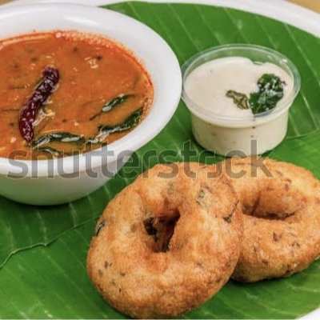

Ingrediants
- 1 cup urad dal (black gram, skinned)
- 2-3 green chilies (chopped)
- 1-inch ginger (chopped)
- Few curry leaves (chopped)
- 2 tbsp coriander leaves (chopped)
- 1/2 tsp black pepper (whole or crushed)
- 1 small onion (finely chopped, optional)
- Salt to taste
- Oil for deep frying

Soak & grind –
Soak urad dal for 4-5 hours, then drain and grind to a thick, smooth batter with minimal water. Add salt and mix well.Soak & grind –
Mix in chopped green chilies, ginger, curry leaves, coriander, black pepper, and onions (optional).Shape the vadas –
Wet your hands, take a small portion of batter, shape it into a ball, and make a hole in the center.Deep fry –
Heat oil on medium heat and carefully slide the vadas into the oil. Fry until golden brown and crispy.Drain & serve –
Remove and place on a paper towel to drain excess oil. Serve hot with coconut chutney and sambar!
కావలసినవి
- 1 కప్పు ఉడకబెట్టిన పెసరపప్పు (సన్నగా తరిగినది)
- 2-3 పచ్చి మిరపకాయలు (తరిగినవి)
- 1 అంగుళం అల్లం (తరిగినది)
- కొన్ని కరివేపాకు ఆకులు (తరిగినవి)
- 2 టేబుల్ స్పూన్లు కొత్తిమీర ఆకులు (తరిగినవి)
- 1/2 టీస్పూన్ నల్ల మిరియాలు (మొత్తం లేదా చూర్ణం)
- 1 చిన్న ఉల్లిపాయ (సన్నగా తరిగి, ఐచ్ఛికం)
- రుచికి తగిన ఉప్పు
- లోతైన వేయించడానికి నూనె
దశలుః
ఉడకబెట్టండి మరియు గ్రైండ్ చేయండి-
ఉడికించిన పప్పు 4-5 గంటలు నానబెట్టండి, ఆపై తక్కువ నీటితో మందపాటి, మృదువైన పిండిలా వడకట్టండి. ఉప్పు వేసి బాగా కలపాలి.రుచులను జోడించండి-
తరిగిన పచ్చి మిరపకాయలు, అల్లం, కరివేపాకు, కొత్తిమీర, నల్ల మిరియాలు మరియు ఉల్లిపాయలు (ఐచ్ఛికం) కలపండి.వడాలను ఆకారం చేయండి-
మీ చేతులను తడి చేయండి, పిండి యొక్క చిన్న భాగాన్ని తీసుకోండి, బంతిని ఆకారం చేయండి మరియు మధ్యలో ఒక రంధ్రం చేయండి.డీప్ ఫ్రై-
మీడియం వేడి మీద నూనె వేడి చేసి, వడలను జాగ్రత్తగా నూనెలో వేయించండి. బంగారు గోధుమ రంగు మరియు మెత్తగా అయ్యే వరకు వేయించండి.వడకట్టండి మరియు సర్వ్ చేయండి-
అదనపు నూనెను తొలగించడానికి కాగితపు టవల్ మీద ఉంచండి.